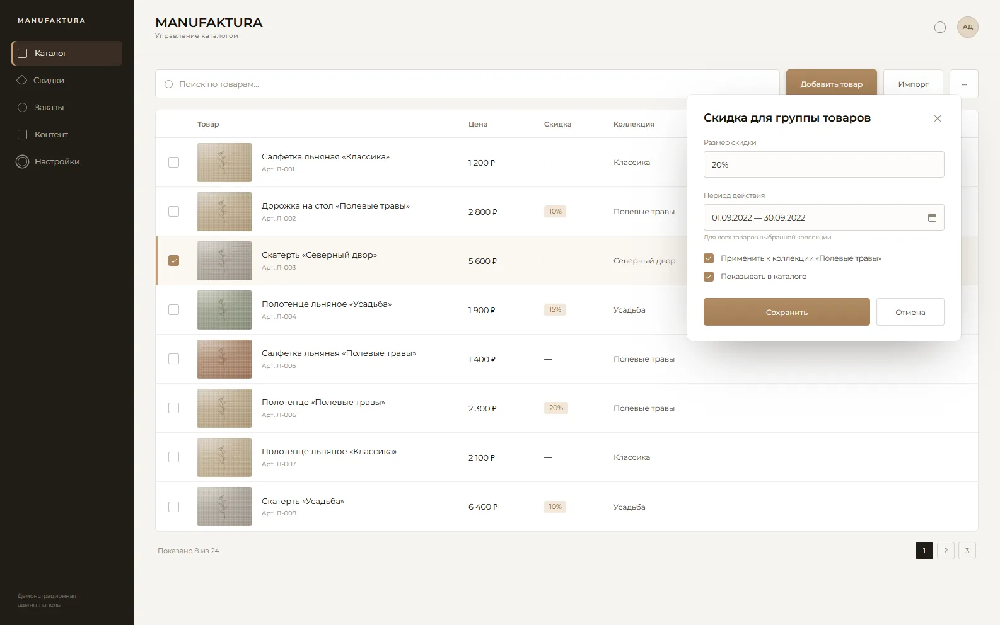
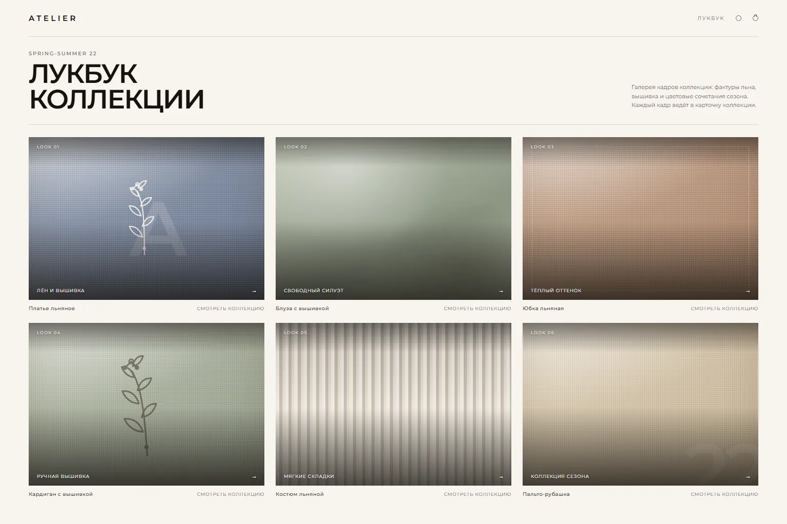
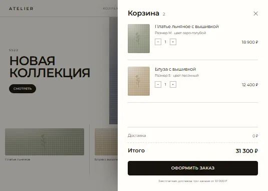
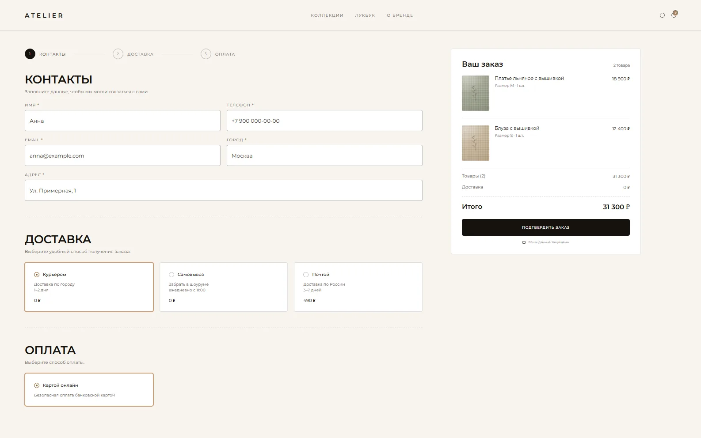
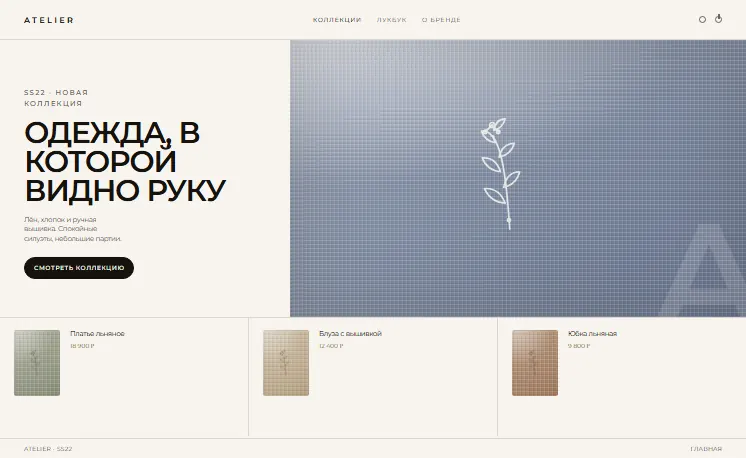

Предпосылки
Работу с клиентом мы начали как команда техподдержки — по рекомендации. Чем дольше жил сайт, тем тяжелее становилось с ним работать: часть функциональных блоков нельзя было редактировать.
Выяснилось, что предыдущие исполнители оказались недобросовестными. Многие нужные заказчику функции были невыполнимы, техподдержка тратила на них лишнее время, а издержки росли. На перспективу выгоднее было разработать новый сайт.
О проекте
Главной целью было разделить один старый сайт на два новых: от сайта текстильной фабрики отделить сайт бренда её дизайнера.
Основная проблема проекта — UX/UI-дизайнер со стороны заказчика задерживал свою часть работы, а разработка шла параллельно. Дизайн приходил недоделанным, и правки приходилось внедрять уже в процессе.
Цель
Разделить сайт, сохранив структуру админ-панели, чтобы администраторы без труда наполняли оба магазина постоянно обновляющимся контентом.
Задачи
- 01Разделить один сайт на два полноценных интернет-магазина
- 02Оставить админ-панель в исходном виде на обоих сайтах
- 03Сохранить функционал «скидки»
- 04Настроить для товаров соответствие по коллекции
- 05Добавить лукбук с галереей фотографий
- 06Внедрить нестандартную корзину
- 07Кастомизировать компонент оформления
sale.order.ajax - 08Курировать интеграцию сайта с 1С
- 09Внедрить маркетинговые инструменты
Процесс
Воссоздание админ-панели
Просто перенести функционал с одного сайта на другой нельзя, поэтому его пришлось воссоздавать в таком же виде на новом сайте.
В оба сайта нужно было внедрить функционал «скидки» — удобную настройку скидок прямо в админке для большой группы товаров.

Второй важный функционал — коллекции. Это свойство, по которому товары из разных разделов (например, банные полотенца и кухонные салфетки из коллекции «Полевые травы») объединяются в отдельном разделе коллекции.

Для сайта брендовой одежды внедрили лукбук — галерею кадров для конкретной коллекции. Ничего сложного, но функционал делали с нуля.

Нестандартное расположение корзины
Обычно корзина живёт на отдельной странице, но из-за дизайнерского решения здесь она сделана всплывающим окном. Из-за этого появились сложности с передачей данных о корзине в оформление заказа.
Само оформление заказа было в нестандартном блочном виде — пришлось доработать, авторски изменить существующий компонент 1С-Битрикс.



Двусторонняя интеграция с 1С
На старом сайте интеграции с 1С не было — всё выгружалось и заносилось вручную. На новых сайтах настроили двусторонний обмен по заказам, остаткам и товарам. Это базовая история: вместе с подрядчиком со стороны клиента мы настроили и проверили интеграцию.
Сайт фабрики
каталог скидки коллекции1С
товары остатки заказыСайт бренда
каталог лукбук коллекцииЗадержки в работе
Дизайнер на проекте был со стороны заказчика, но не в штате. Дизайн задерживался, разработку приходилось вести по недоделанным макетам и вносить правки уже в процессе.
В какой-то момент дизайнер перестал выходить на связь, оставив проект недоделанным. Наши компетенции позволили продумать и согласовать с заказчиком дизайнерские решения так, чтобы они устроили клиента и не выбивались из общей стилистики сайта.
SEO и маркетинговое сопровождение
За маркетинговое и SEO-продвижение мы не отвечали: на стороне заказчика есть специалисты, которые занимаются маркетингом и передают нам аудит сайта — его мы и внедряем.
Итог
Единственной проблемой, которая мешала работе и задерживала процесс, был дизайн. В остальном работа шла слаженно: сайт работает без перебоев, оттестирован и принимает заказы.